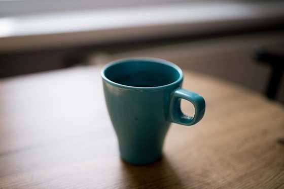
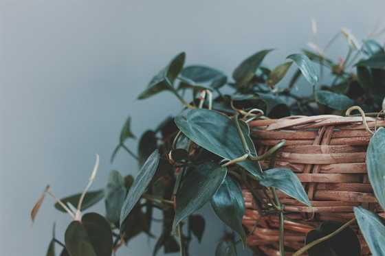
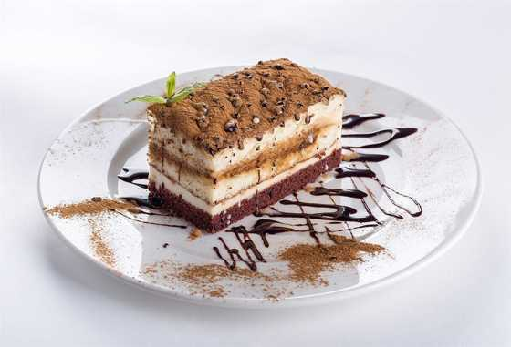
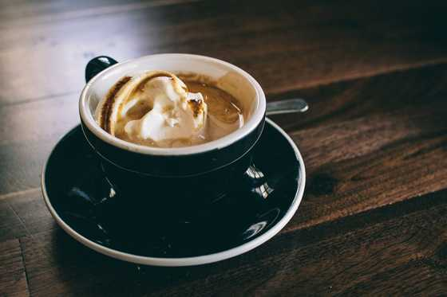
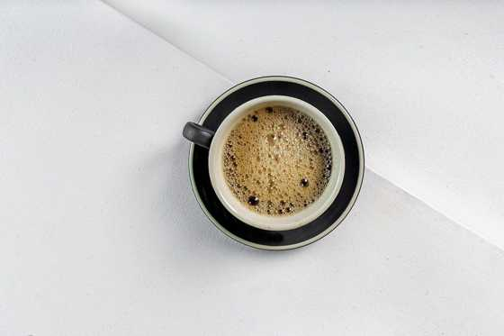
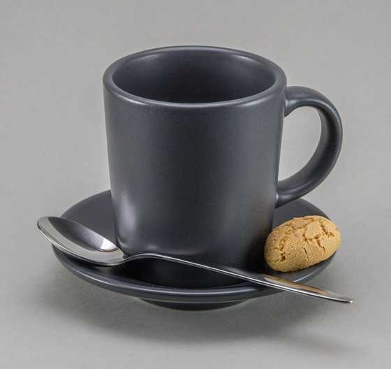
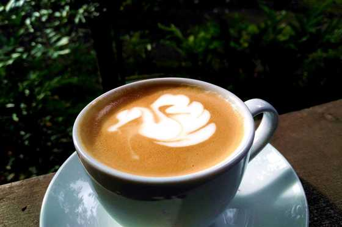
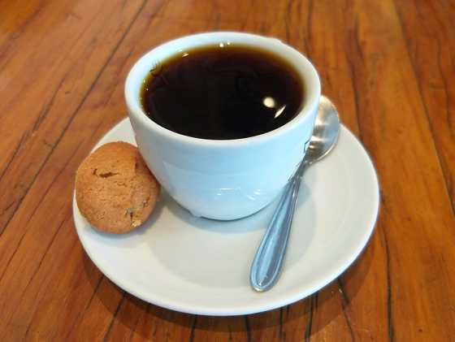

お店の由来と想い
ABOUT
店名の「ポルテ」はフランス語で「扉」の意味。取材記事では、お客さまを迎える扉であると同時に、これまでのつながりと新しい暮らしを結ぶ場所と紹介されています。
東京のイタリアン「aperto(アペルト)」で約7年シェフを務めた中島健太さんが、三条市出身の美紗さんとともに2023年に三条へ。この店は同店の2号店として開かれました。目指すのは、子どもからお年寄りまでが気軽にイタリアンを楽しめ、集まれる場所とされています。
※店名の意味や想いは公開されている取材記事に基づきます。

メニュー
MENU
取材記事で紹介されている主な提供内容です。最新の内容は準備中です。
営業時間・定休日・価格:準備中(最新情報はInstagramをご確認ください)






口コミ
VOICE
イメージ例
サンドイッチがずっしりして食べごたえがありました。ゆっくり過ごせる店内でほっとします。
イメージ例
フォカッチャがふわふわで、また買いに行きたくなる味。ランチにちょうどいいです。
イメージ例
焼き菓子をお土産に。穏やかな雰囲気で、友人とのおしゃべりにも向いています。
上記は制作側が作成したイメージ例で、実在のお客様の声ではありません。




写真クレジット
CREDITS
掲載写真はフリー素材です。縮小・切り抜きなどの加工をしています。
- mug-window: Shixart1985 / CC BY 2.0
- espresso-top: Jubair1985 / CC0
- gray-cup: Friedrich Haag / CC BY-SA 4.0
- glass-latte: Artem Beliaikin / CC BY 2.0
- latte-art: Abdulrohmatt / CC BY-SA 4.0
- drip-cup: Melsj / CC BY-SA 4.0
- cake-plate: Daria Yakovleva / CC0
- cake-choco: JIP / CC BY-SA 4.0
- cookies: sdnet01 / CC0
- affogato: Ross Parmly / CC0
- leaf-band: Plantmomcare / CC BY-SA 4.0
- plant-basket: Greg Weaver / CC0
- pasta: 8w9d / CC0